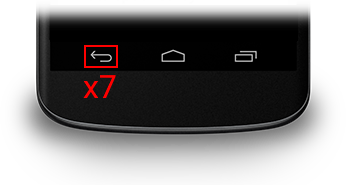
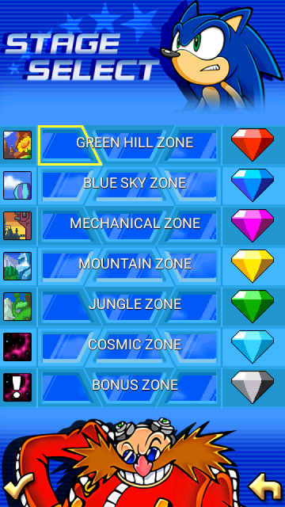
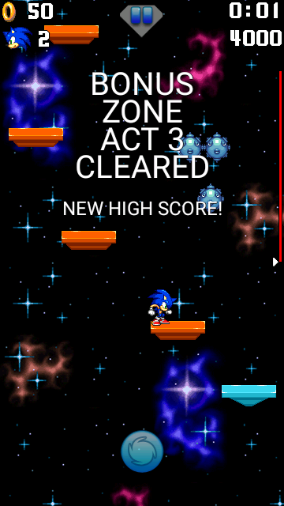
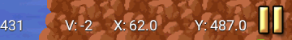
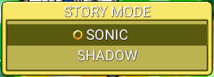
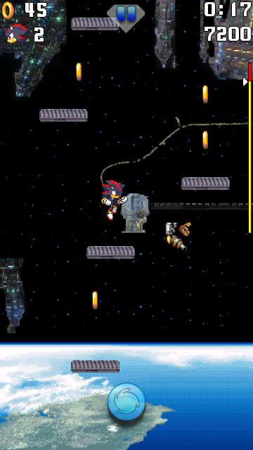

Cheat Code
Using the cheat code
Sonic Jump Revival features a cheat code that serves different purposes. This page explains how to use the cheat code and what consequences it has.

To activate the cheat, all you have to do is press 7 times on the BACK button of the Android navigation bar.
Unlocking all stages
Description

Once the cheat activated, you can have access to every stage in the game!
If the Bonus Zone doesn't show up in the stage select menu, press the BACK button again to make it appear.
Chaos Emerald shards
Additionally, Chaos Emerald shards can also be obtained depending on when you activated the cheat.
Normally, only the 2 first emerald shards of the Bonus Zone are obtained. But if you have activated the cheat during the loading screen, all emerald shards (except the last one of the Bonus Zone) are obtained.
Clearing stages instantly

After activating the cheat, pressing the BACK button during a stage will make you clear the stage instantly.
Clearing a stage this way also makes you earn 50 rings, allowing you to earn an emerald shard, in case you haven't got one.
You can even use this cheat during Speedrun Mode to clear all stages quickly.
Multiplayer Mode
Description
The Multiplayer Mode is a game mode where 2 players are playing together for casual or competitive purposes.
One player is playing as Sonic, whereas the other player is playing as Shadow. In Multiplayer Mode, Shadow has the same physics as Sonic so both players has the same advantages.
How to start Multiplayer Mode
The Multiplayer Mode functions via local connection. Make sure that both player's device are connected to the same Wi-fi.

After activating the cheat, select MULTIPLAYER in the Main Menu and a window appears.
Select your device IP to continue.

Next, the game asks if you want to be the receiver or the client.
If you want to be the client, select CLIENT and insert the other player's device IP.
If you want to be the receiver, select SERVER and wait for the other player to insert you device IP.

Finally, once done correctly, select a game mode and the other player's screen will appear on the top-left of your screen.
Why is it hidden?
The Multiplayer Mode was originally going to be one of the new features highlighted in Sonic Jump Anniversary (v2.0.0), but it was decided to make it hidden as a secret feature, due to the problematic structure of the multiplayer screens.
For more information, check out the Multiplayer Mode project.
Shadow Story
Description

After activating the cheat, selecting STORY MODE leads you to a special menu which allows you to play the regular SONIC story or the new SHADOW story.
The SHADOW story lets you play the game with a new story and different stage environments.
New cutscene

If you play the SHADOW story as Shadow, the first stage grants you with a brand-new cutscene inspired by the story from Sonic X Shadow Generations.
"COLONY ARK" ZONE

Additionally, Green Hill Zone Act 1 will have a different stage environment resembling Colony ARK.
Make sure to select SHADOW in the CHARACTER SELECT menu before selecting the SHADOW story.
Why is it hidden?
The reason for this story being hidden is because it is currently unfinished.
Only the first stage has differences between the SONIC and SHADOW story.
And even then, the level layout isn't the same.
The SHADOW story is an idea made by GdGohan.
If he decides to keep working on this project, maybe this story will available from the start.
However, this story project isn't a big priority at the moment.